In almost every statistics classes, no matter if it is a introductory level one or a professional level one, one of the most important topics is building an appropriate model to fit a chosen data set. There are lots of ways to achieve this goal. For instance, in STAT 112, a LSLR model is introduced to fit a data set with linear regression. Even though it is a simple and easy-to-use tool, it is likely to cause misleading results and one of these problems is caused by confounders. By saying confounders, we are talking about features that are related with both our exposure variable(X) and response variable(Y). Thus, by not considering them in advance, we would get significant relationship between the exposure variable and response variable simply under the effects of confounders. Therefore, it is worth considering this problem and these posts are meant to tell a way to avoid confounders’ effects when building the model and a real life data set is given as an example.
In this example, we are going to use a data set about an animal shelter’s animals’ intake and outcome records in Long Beach, California. The question we are trying to solve is whether if animals taken under the jurisdiction of Long Beach stay longer in shelters than those under the jurisdiction of other area. In this case, we are trying to find a relationship between the length of animals stay in the shelter and whether if they are under the control of Long Beach government when being taken into the shelter. It seems like a good place to fit with LSLR model but as we’ve said before, confounders need to be considered. Before we do any further analysis, we have to clean our data first.
This data set originally includes 30536 observations and 21 variables. While it also includes many unique variables including animals’ names, their IDs, locations, reasons to be taken etc. which we don’t consider as influential to our model. Thus we eliminated 7 variables from our data set. Moreover, we have to calculate our response variables personally since the records only provided the intake data and outcome data of animals. After calculating the length of stay by days, we delete the records of specific months and days and now we have 12 variables. In these variables, four of them are numerical including age, stayTime, intakeYear and outcomeYear. For the remaining categorical variables, we need to modify it to make it eligible to be used in model fitting. We first need to check the missing data. Unfortunately, there are some missing data which are displayed in the first plot and it is common in real life data set. For this example, we simply delete all the observations with missing data since we have a relatively large data set. However, this may cause bias to our model fitting since we are not sure how much useful information is included in these deleted data. Thus, we would perform sensitivity analysis trying to capture the bias at the end of this example. For now, we are going to keep cleaning this data set. Another big problem of this data set is that its categorical variables have too much levels in it. Since most of the categorical variables have more than 10 categories, it may lead to small sample size in each categories and so it could not be used to in analysis since bias is then introduced with small categories. Thus, for most categorical variables, we keep the largest two levels and cluster all the other levels into a large “Other” category. While there is an exception, which is animal’s primary color and secondary color. For these two variables, we clustered them into light/dark colors and pure/tabby/point patterns to fit our model easily. After modifying it, we assured that each level includes at least 10% of the whole data set. Now we will start our causal analysis in next section.
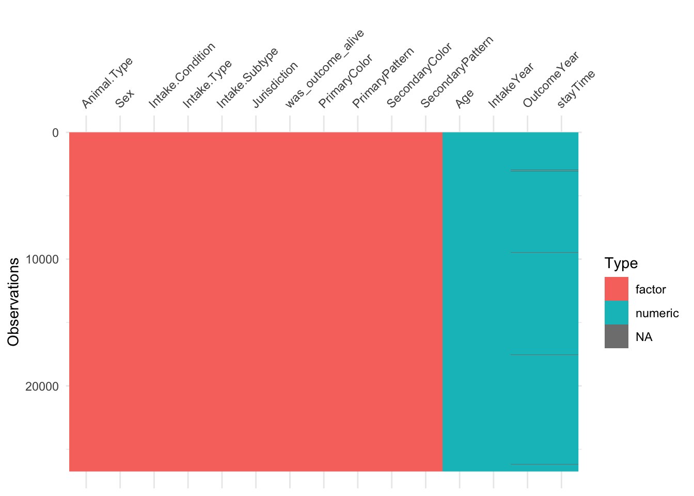
We start our causal analysis with the help of DAG, which is directed acyclic graph. To briefly explain it, DAG is a useful tool to visualize relationships between variables. In this plot, variables will be connected by arrows and an arrow indicates an assumed causal relationship between connected variables. So first, we have to create relationships between variables by ourselves. In this example, we assumed that the exposure variable, jurisdiction of an animal is related to animals type, age , sex and type of intake; we also assumed that the outcome variable, which is the length of stay time in the shelter may be affected by animals type, sex, age, and their health condition. Their health condition may further related to animals’ age, type, sex, appearance, intake condition, intake type/sub-type etc. In the following DAG, we are able to visualize these complicated relationships.
Besides simply visualizing these relationships, we can also figure out confounders by “ggdag_adjustment_set” function in R. This function directly provides us a plot specifying variables that need to be adjusted when building our model, which can be considered as confounders. Thus, we don’t need to find out confounders by ourselves by looking through DAG plot. Through this adjustment plot, we recognize that we need to adjust sex, age, type of animal and type of intake for our exposure variable. By having the adjustment set, we could fit a model between these variables and our exposure feature and then perform further analysis to minimize the effect of these confounders, which is provided in next section.
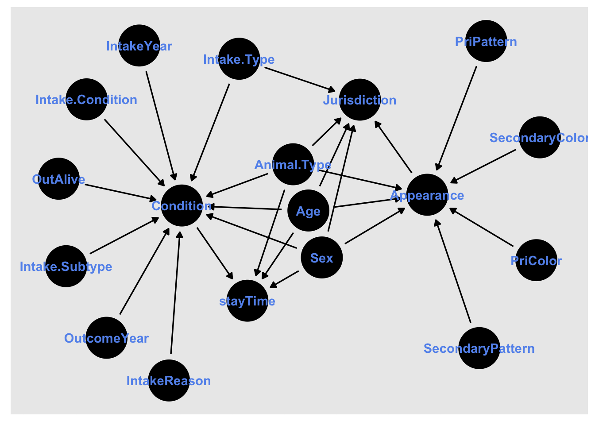
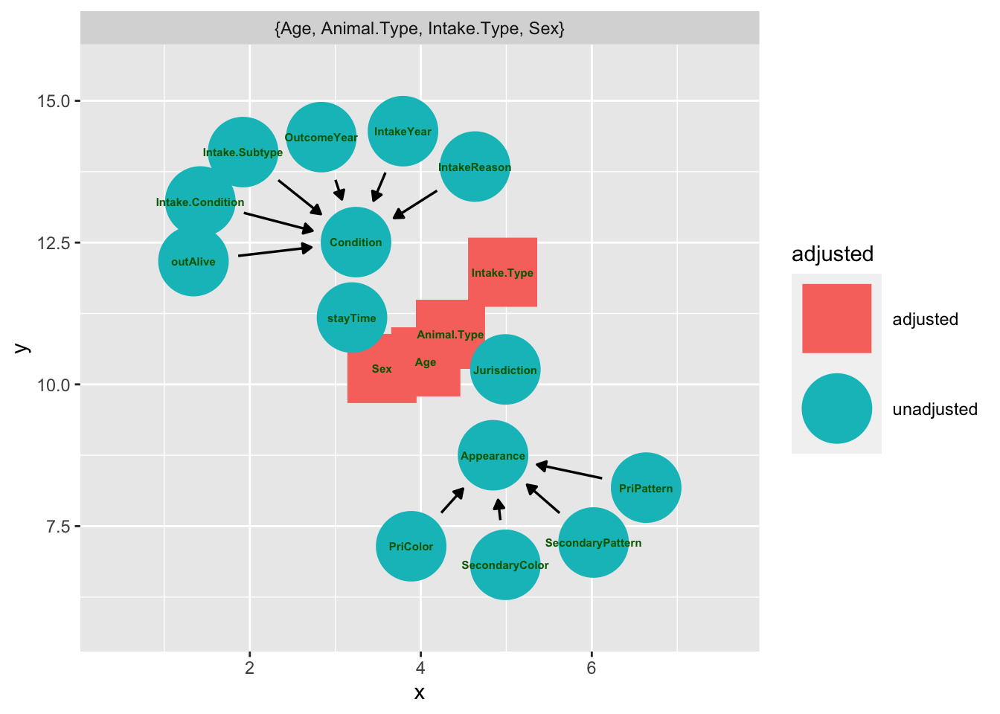
To explore the effects of confounders, we first fit a propensity score model which estimates the fitted value of our exposure variable by features we considered as confounders. We then call these fitted values as propensity score. This process is similar to how we fit a LSLR model in STAT 112. The only difference is that in this model, we fit the exposure(X) variable with confounders instead of the outcome variable(Y) with exposure variables(X). However, the whole process is pretty similar.
After getting the fitted value of our exposure variable, we want to visualize the distribution of this variable by mirrored plots. The reason why mirrored plots is applied here is that since our exposure variable is a binary categorical variable, these propensity scores are separated into these two categories and mirror plots help us better visualize this result. Here are the plots and table:
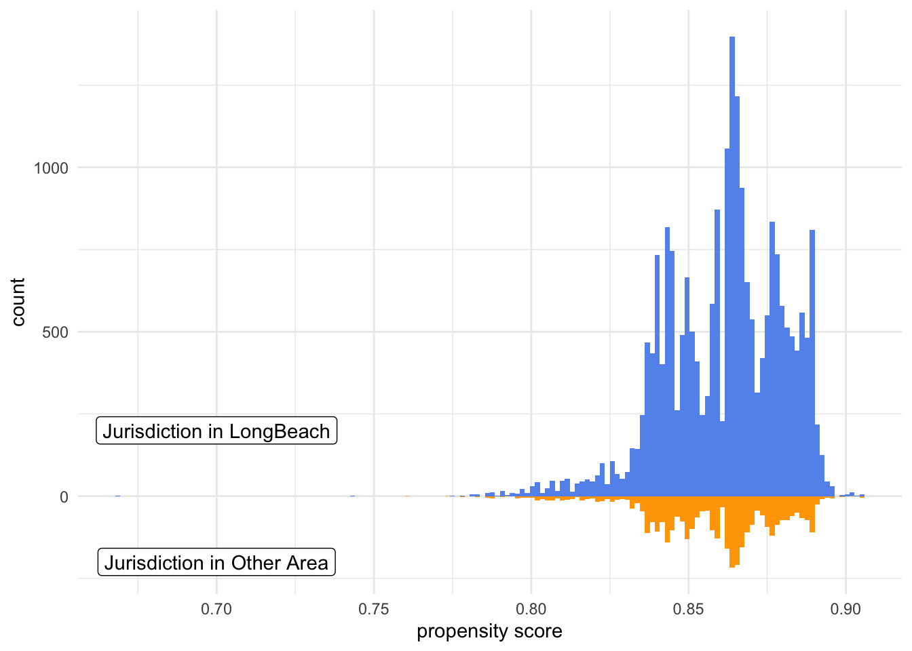
| Characteristic | Overall, N = 26,4041 | 0, N = 3,6751 | 1, N = 22,7291 |
|---|---|---|---|
| Intake.Type | |||
| Other | 4,060 (15%) | 598 (16%) | 3,462 (15%) |
| STRAY | 20,094 (76%) | 2,714 (74%) | 17,380 (76%) |
| WILDLIFE | 2,250 (8.5%) | 363 (9.9%) | 1,887 (8.3%) |
| Age | 4.0 (3.0, 6.0) | 4.0 (2.0, 6.0) | 4.0 (3.0, 6.0) |
| Sex | |||
| Female | 6,422 (24%) | 838 (23%) | 5,584 (25%) |
| Male | 6,901 (26%) | 911 (25%) | 5,990 (26%) |
| Spayed/Neutered | 8,869 (34%) | 1,320 (36%) | 7,549 (33%) |
| Unknown | 4,212 (16%) | 606 (16%) | 3,606 (16%) |
| Animal.Type | |||
| CAT | 13,685 (52%) | 1,957 (53%) | 11,728 (52%) |
| DOG | 9,545 (36%) | 1,187 (32%) | 8,358 (37%) |
| Other | 3,174 (12%) | 531 (14%) | 2,643 (12%) |
| 1 n (%); Median (IQR) | |||
From both the mirrored histograms and the unweighted table, we find that population are not balanced between group of jurisdiction in long beach and group of jurisdiction in other area as there were more animals being classified as under the jurisdiction of Long Beach. This conclusion has been further verified by the unweighted table as the number of animals for each confounder differs between Long Beach group and other group.
To fix this problem, we use the ATO weight which intends to estimate those animals which are possible to be either in Long Beach group or other group. Details are explained in the next section.
ATO stands for average treatment effect among the overlap which intends to create a “pseudo” population data set that has equal variance for each group in the population. This means that individuals are likely to be in either groups and the weight to transform our original data into the desired population is the ATO weights, which is calculated as:
\(\omega_{ATO} = (1-e_i)X_i + e_i(1-Xi)\)
Here the \(e_i\) is our fitted value from the previously fitted confounders and exposure model and \(X_i\) is our exposure variable apparently. With the ATO weights, we are able to create the weighted table and distribution plots of population in both groups. These table and plots are showed below:
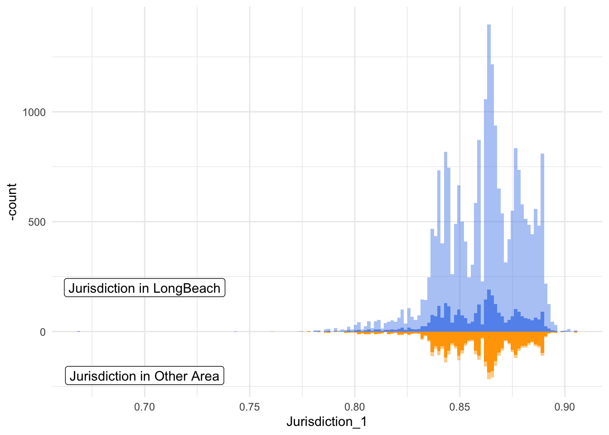
| Characteristic | Overall, N = 6,3081 | 0, N = 3,1541 | 1, N = 3,1541 |
|---|---|---|---|
| Intake.Type | |||
| Other | 1,013 (16%) | 506 (16%) | 506 (16%) |
| STRAY | 4,686 (74%) | 2,343 (74%) | 2,343 (74%) |
| WILDLIFE | 609 (9.6%) | 304 (9.6%) | 304 (9.6%) |
| Age | 4.0 (3.0, 6.0) | 4.0 (2.0, 6.0) | 4.0 (3.0, 6.0) |
| Sex | |||
| Female | 1,455 (23%) | 728 (23%) | 728 (23%) |
| Male | 1,578 (25%) | 789 (25%) | 789 (25%) |
| Spayed/Neutered | 2,239 (35%) | 1,120 (35%) | 1,120 (35%) |
| Unknown | 1,036 (16%) | 518 (16%) | 518 (16%) |
| Animal.Type | |||
| CAT | 3,350 (53%) | 1,675 (53%) | 1,675 (53%) |
| DOG | 2,076 (33%) | 1,038 (33%) | 1,038 (33%) |
| Other | 882 (14%) | 441 (14%) | 441 (14%) |
| 1 n (%); Median (IQR) | |||
This plot displays the distribution of propensity score between the “jurisdiction in Long Beach” and “jurisdiction in other area” group after being weighted by ATO weights. We can observe that our weighted population are more balanced between these two groups compared to the previously unweighted one, and we can also observe that their distributions are more similar to the original group of “other area” because we have less population in this group at first. It means that the conditional probability of being in other area is relative small in this data set. This conclusion is also confirmed by our weighted table. From this table, we get our weighted population which is smaller than the whole population. By having the weighted population, our population distribution among Long Beach and Other group became balanced and the overall useful sample size shrinked to 6308, with 3154 animals in each group.
To further check if our weighted propensity score model solved the problem of unbalanced population size between two groups, we calculate and compare the standardized mean difference(SMD) of all the possible confounders between weighted and unweighted outcomes. Details are included in the next section
The standardized mean difference is often used as a statistics to estimate the differences among groups. To be specific, it is calculated as:
\(d\) = mean difference of propensity score between groups / standard deviation of propensity score among all observations = \((\bar z_{LongBeach} - \bar z_{Other})/ ((s^2_{LongBeach}+s^2_{Ohter})/2)^{1/2}\)
By calculating this value, we are able to figure out if there is a significant difference between groups. In this case, we prefer a small SMD value which indicates a small difference of mean propensity score between groups. We then create a Love Plot which has SMD values on the x-axis and variable names on the y-axis to visualize the SMD between weighted and unweighted outcome. The plot is displayed below:
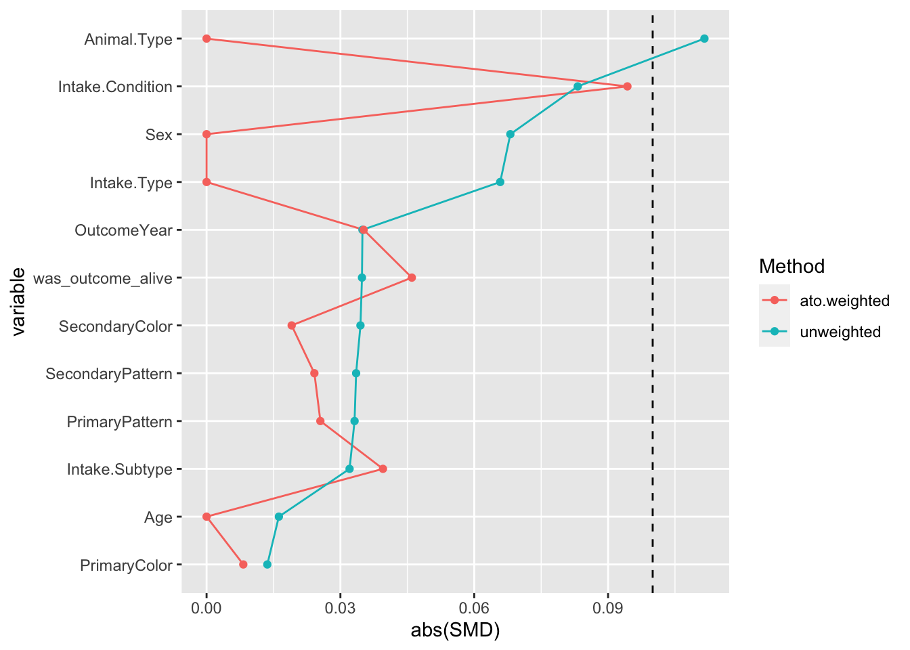
From this love plot, we find that for those variables being handled by weights, their SMDs equal to zero which are better than the unweighted SMD values. While since we also measured some unweighted potential confounders, we figured out several features with larger SMD which also need to be processed by weighting: these includes Intake.Condition, OutcomeYear, was_outcome_alive and Intake.Subtype. Thus, we will refit our propensity score model by weighting these variables using ATO weights based on the previous model.
Refit our propensity score simply repeat the previous steps of fitting a propensity score model with new variables, calculate the ATO weight, calculate SMDs and visualize the result by a love plot. As showed in the newly created love plot, all of our weighted SMDs are smaller than unweighted SMDs, which indicates that we now have a small difference of mean outcome between groups for all confounders.
Moreover, we still need to check the empirical CDF plots for all continuous variables to see if two groups of these variables are balanced across the whole range of values.
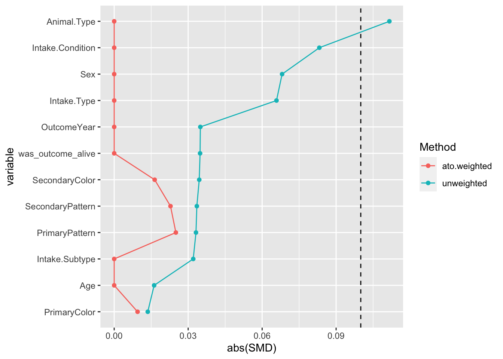
This plot may sound familiar because it is a plot displaying the estimate of cumulative distribution function. It allows us to plot the data of this variable from smallest to largest and see how this feature distributed across the data set. While in causal analysis, we apply it by plotting both the fitted value and observed value of the same variable to see if their distribution are close to each other. Therefore, we would prefer distributions overlapped with other which means we successfully capture the entire distribution of our exposure variable by using the specified confounders.
In this case, we have in total of three continuous variables which are: age, intake year, and outcome year. Thus, we create both weighted and unweighted eCDF plots for all three variables in the following:
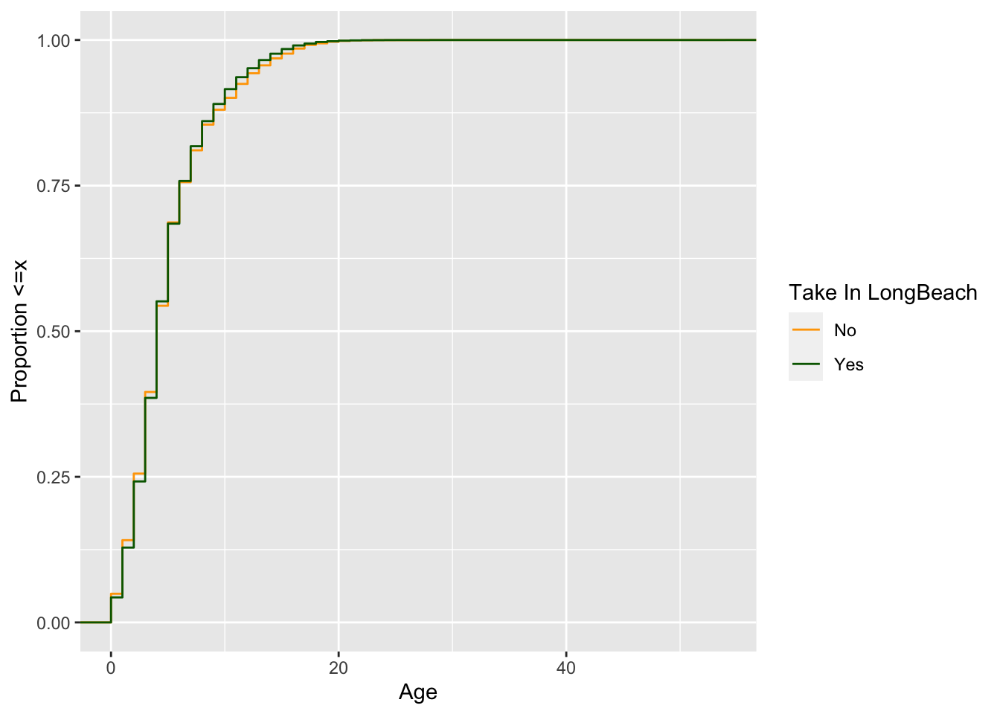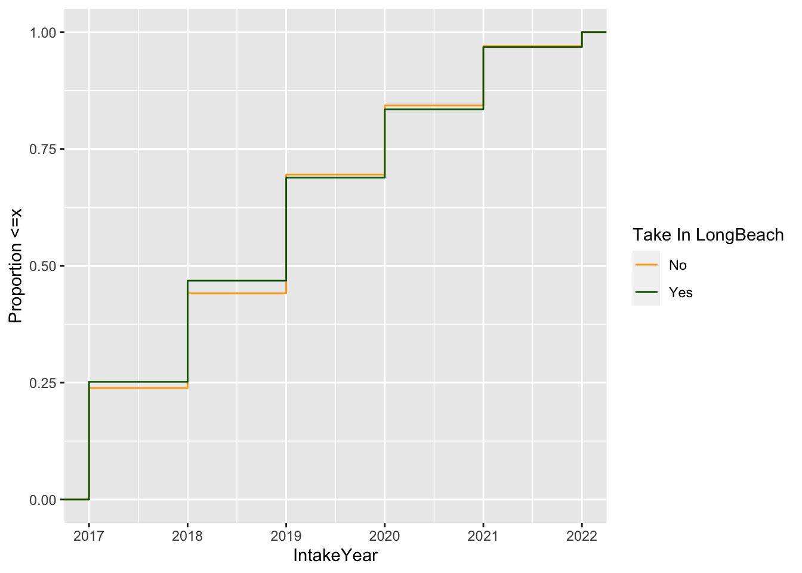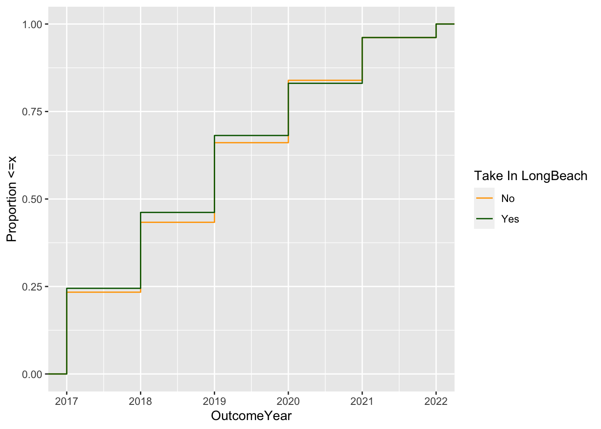
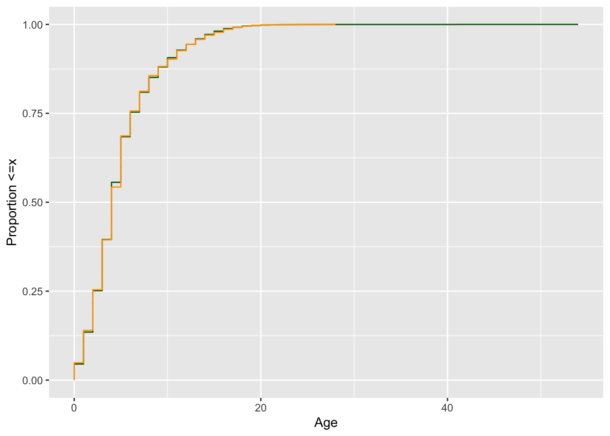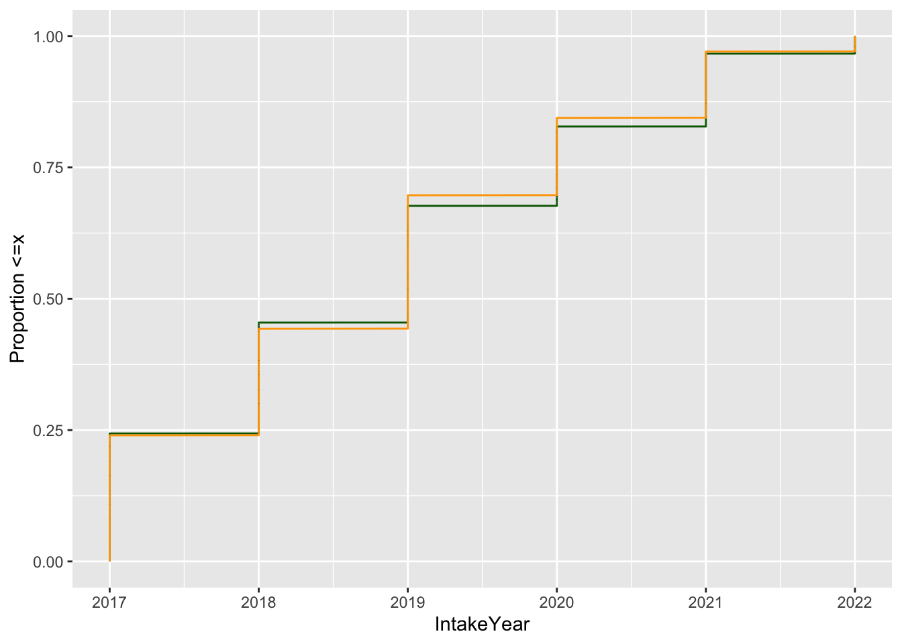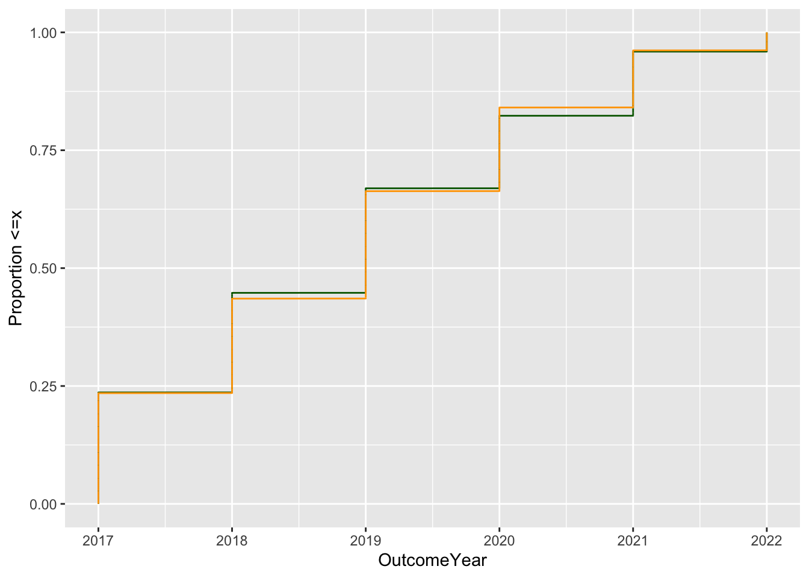
Actually in this example, both our weight and unweighted empirical CDF plots suggest that two groups in these three continuous variables are balanced across the whole range of values. However our weighted one fits better and so it is still worth it to do a WTO weighting. With this result, we do not need to further transform our confounders to let them fit the propensity model better. So now we are ready to fit our outcome model.
Finally, we are able to fit our outcome model by incorporating the derived propensity score model for our exposure variable. However, similar to LSLR model, the fitted value of jurisdiction includes uncertainty just as we’ve have 95% confidence interval for our estimated \(\beta\) term in LSLR model. So in our model fitting, we also want to consider the uncertainty of our estimates by creating a 95% confidence interval for our coefficient of exposure variable as well.
Thus, instead of simply conduct point estimating for the average causal effect, we applied bootstrapping to estimate the probability weights. In this case, we extracted 1000 samples from the original data set to fit the model respectively. To explain more about the bootstrapping method, we first fit our propensity score model we explored previously; then we calculate this inverse probability weights which indicate the estimated probability of our exposure being observed and we apply this weight when fitting the model of outcome ~ exposure. This model is now our ipw model. Where bootstrapping being added is that we created a 1000 bootstrapped samples from the original data set and so now we have 1000 different data sets with the same observations while different combination of our original data. Then we fit our ipw model to these 1000 data sets and get their fitted coefficients. Then the 95% confidence interval is derived by using t-statistics.
So the 95% confidence interval of the coefficient of under the jurisdiction of Long Beach is between -5.00 and -1.89, with the mean of estimates equal to -3.39. So this average causal effect result suggests that for animals who may be taken either in the jurisdiction of Long Beach or in other area, their average length of stay in the shelter for those who are in the jurisdiction of Long Beach decreases from 1.89 to 5 days compared to those who are in the jurisdiction of other area.
As being discussed at the beginning of this example, the way we handle the missing data introduced some bias for our model fitting. Before we conduct a sensitivity analysis to capture this bias, an overview about the sensitivity analysis would be helpful to understand this idea. The way we consider the missing data is to regard them as an unmeasured confounder which affects both the observed exposure and outcome effect. To further explore it, we first examined how are missing data related to our exposure variable. So we checked the missing condition among those variables we used to fit the propensity score model. It turns out that only age included several missing data and so we created this table to explore the missing condition among groups in Jurisdiction.
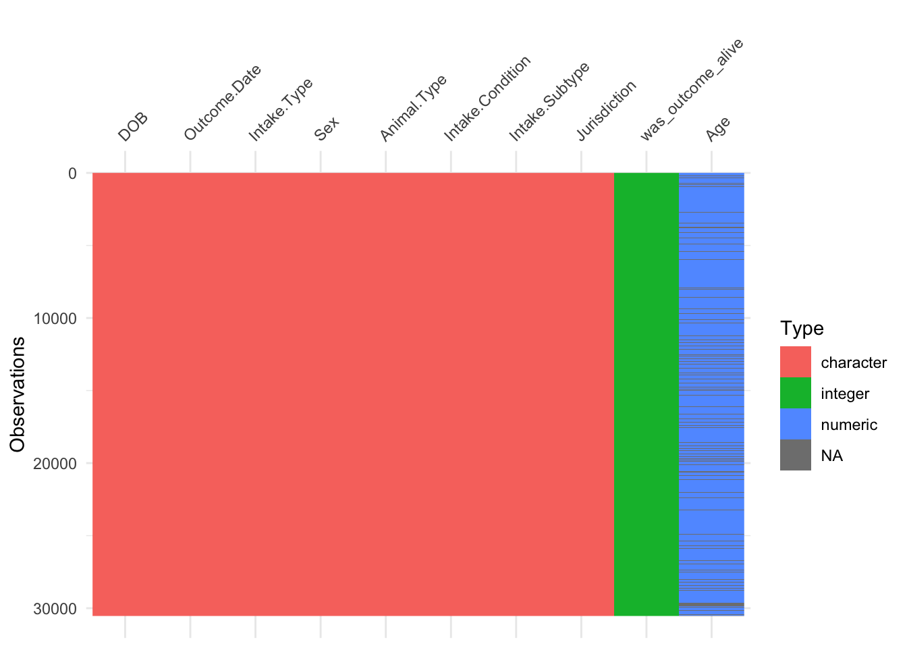
| Characteristic | Overall, N = 30,5361 | LongBeach, N = 25,9821 | Others, N = 4,5541 |
|---|---|---|---|
| Age | 4.0 (3.0, 6.0) | 4.0 (3.0, 6.0) | 4.0 (2.0, 6.0) |
| Unknown | 3,774 | 2,930 | 844 |
| 1 Median (IQR) | |||
This table suggests that there are more missing data in the Long Beach group and so it affects more on this group. The prevalence can be calculated for each group as the prevalence of missing for Long Beach jurisdiction is approximately 0.11 and the prevalence of missing for other area is approximately 0.185. Then we are able to estimate
\(\beta_{Y~X|U+Z} = \beta_{Y~X|Z} - log(e^{\beta_{Y~U|X+Z}}p_1+(1-p_1)/e^{\beta_{Y~U|X+Z}}p_0+(1-p_0))\)
in our sensitivity analysis, which is the final interval of the coefficient we assumed by capturing the bias of missing data. One more assumption for this sensitivity analysis is that the effect of age on our response variable, the length of stay, after adjusting for the other confounders has a ratio of 2. Thus, by performing the sensitivity analysis of adjusting coefficients with binary prevalence, we get the updated observed effect interval is between -1.64 and -4.75 with an estimation equals to -3.14 by considering the missing data. Therefore, we may now conclude that there is a firm negative association between the length of stay in shelters and animals being taken in the jurisdiction of Long Beach compared to under the jurisdiction of other area.